This is to certify that MR. ADITYA BHARDWAJ, student of THIRD YEAR of Bachelor of Data Science, Division: A, Roll No.: TDDS003A of Semester V (2026 – 2027) has successfully completed the project entitled:
in partial fulfilment of the requirements for the award of the degree of BACHELOR OF DATA SCIENCE as per the prescribed curriculum and academic guidelines.
|
Ms. Sweta Suman Project Guide Department of Data Science |
[NAME OF COORDINATOR] Head of Department / Coordinator Department of Data Science |
|
|
[NAME OF PRINCIPAL] Principal / Institutional Head [COLLEGE / INSTITUTION NAME] |
||
| PRN No.: | ____________________ | Roll No.: | TDDS003A |
| 1. Name of Student: | ADITYA BHARDWAJ | ||
| 2. Title of Project: | GRAPH-ENHANCED INSURANCE CLAIM ANOMALY AND DUPLICATE NETWORK DETECTION | ||
| 3. Name of Guide: | MS. SWETA SUMAN | ||
|
Signature of the Student Date: ____________________ |
Signature of the Guide Date: ____________________ |
|
Signature of the Coordinator Date: ____________________ |
|
Insurance claim fraud represents a substantial and persistent operational challenge across the global insurance industry, draining financial reserves, inflating customer premiums, and placing an unsustainable burden on Special Investigation Units (SIUs). Conventional anti-fraud systems rely primarily on manual audits, static rule-based thresholds, or siloed transactional checks. While effective against primitive opportunistic fraud, these approaches fail systematically when confronted with sophisticated, multi-party organized syndicates involving repeated invoice recycling, staged vehicular collisions, cross-claimant collusion, and high-frequency rogue repair providers.
To address these critical operational deficiencies, this project presents the design, mathematical formulation, full-stack implementation, and production deployment of "Graph-Enhanced Insurance Claim Anomaly and Duplicate Network Detection" (operating under the enterprise platform name FraudShield AI). The proposed system is an end-to-end, decision-support platform that fuses four complementary analytical dimensions into a calibrated composite risk engine:
The analytical outputs are unified into an empirically weighted hybrid risk formula:
$$\text{Composite Risk} = 0.45 \cdot \text{ML} + 0.25 \cdot \text{Anomaly} + 0.15 \cdot \text{Duplicate} + 0.15 \cdot \text{Graph}$$
stratifying incoming claims into four operational triage bands: CRITICAL (≥ 0.75), HIGH ($[0.55, 0.75)$), MEDIUM ($[0.35, 0.55)$), and LOW ($< 0.35$). In experimental evaluation on a research benchmark population of 320 claims with a 16.25% ground-truth fraud prevalence, the combined HIGH and CRITICAL bands achieved an operational investigation precision of 85.19% (23 confirmed fraudulent claims out of 27 flagged), while the LOW risk tier demonstrated a negative precision of 94.17% (226 confirmed legitimate claims out of 240), enabling automated fast-track processing for 75% of routine claims.
The solution is engineered as a cloud-native architecture comprising a React 18/TypeScript/Vite single-page application deployed on Vercel, a high-performance Python FastAPI asynchronous REST backend deployed on Render, and a persistent PostgreSQL database hosted on Supabase with role-based access control (RBAC), end-to-end JWT authentication, and automated audit logging. Rather than claiming fully automated claim denial, the system adheres strictly to a human-in-the-loop paradigm, empowering SIU investigators with SHAP feature attributions, interactive graph network visualizations, and an audited case management dossier.
I express my deepest gratitude and sincere appreciation to my project guide, Ms. Sweta Suman, Department of Data Science, for her invaluable guidance, constructive critique, and continuous technical mentorship throughout the conceptualization, model development, software engineering, and documentation of this project. Her analytical insights into statistical modeling, class imbalance mitigation, and academic rigor were instrumental in shaping this dissertation.
I extend my heartfelt thanks to the faculty members and laboratory staff of the Department of Data Science for providing the computational infrastructure, academic resources, and conducive environment necessary to undertake this multidisciplinary research project.
I am also thankful to the global open-source data science, machine learning, and software development communities. The availability and documentation of robust open-source frameworks—specifically Scikit-Learn, XGBoost, NetworkX, SHAP, FastAPI, React, Vite, and Supabase PostgreSQL—served as the technical foundation upon which this enterprise platform was realized.
Finally, I dedicate this work to my family and peers for their continuous encouragement, patience, and moral support throughout my academic journey in the Bachelor of Data Science programme.
I, Aditya Bhardwaj, student of Third Year Bachelor of Data Science, Semester V, Roll No.: TDDS003A, hereby declare that the project report entitled:
submitted to the Department of Data Science as part of the curriculum requirements for the degree of Bachelor of Data Science for the Academic Year 2026 – 2027, is a bona fide record of original academic and technical work carried out independently by me under the supervision of Ms. Sweta Suman.
I further declare that this project work has not been previously submitted, either in whole or in part, to any other university, institute, or examining body for the award of any degree, diploma, fellowship, or other academic title. All secondary sources, libraries, algorithms, and documentation referenced within this report have been duly acknowledged in the references section.
|
Date: ____________________ Place: Mumbai, Maharashtra, India |
Aditya Bhardwaj Roll No.: TDDS003A |
| Sr. No. | Topic / Chapter Name | Page No. |
|---|---|---|
| — | Cover Page | i |
| — | Certificate | ii |
| — | Project Proposal Approval Proforma | iii |
| — | Abstract | iv |
| — | Acknowledgement | v |
| — | Declaration | vi |
| — | Table of Contents | vii |
| — | List of Figures | ix |
| — | List of Tables | x |
| — | List of Abbreviations | xi |
| 1 | CHAPTER 1 – INTRODUCTION | 1 |
| 1.1 | Background | 1 |
| 1.2 | Problem Statement | 1 |
| 1.3 | Significance of the Project | 2 |
| 1.4 | Objectives | 2 |
| 1.5 | Purpose and Scope | 3 |
| 1.6 | Applicability | 4 |
| 1.7 | Key Contributions | 4 |
| 2 | CHAPTER 2 – SYSTEM ANALYSIS | 5 |
| 2.1 | Existing System & Limitations | 5 |
| 2.2 | Proposed System Architecture | 5 |
| 2.3 | Advantages of Proposed System | 6 |
| 2.4 | Requirements Analysis | 6 |
| 2.5 | Hardware & Software Specifications | 7 |
| 2.6 | Technology Stack & Survey | 7 |
| 2.7 | Feasibility Analysis | 8 |
| 3 | CHAPTER 3 – SYSTEM DESIGN | 9 |
| 3.1 | System Architecture & Module Division | 9 |
| 3.2 | End-to-End Fraud Detection Workflow | 10 |
| 3.3 | Feature Engineering Pipeline | 10 |
| 3.4 | Composite Risk Assessment & Scoring | 11 |
| 3.5 | Entity-Relationship (ER) Diagram | 11 |
| 3.6 | Data Flow Diagram (DFD) | 12 |
| 3.7 | UML Diagrams (Use Case, Class, State) | 12 |
| 3.8 | Project Schedule & Gantt Chart | 14 |
| 3.9 | Cloud Deployment Architecture | 14 |
| 4 | CHAPTER 4 – IMPLEMENTATION AND TESTING | 16 |
| 4.1 | Development Environment & Tech Stack | 16 |
| 4.2 | Implementation Highlights (Frontend, Backend, DB) | 16 |
| 4.3 | REST API Endpoints Specification | 16 |
| 4.4 | Testing Methodology & Execution Matrix | 17 |
| 5 | CHAPTER 5 – RESULTS AND DISCUSSIONS | 20 |
| 5.1 | Live Production Application Overview & Screenshots | 20 |
| 5.2 | Supervised Fraud Model Benchmark Results | 21 |
| 5.3 | Duplicate & Anomaly Detection Findings | 22 |
| 5.4 | Knowledge Graph Structural Results | 22 |
| 5.5 | Hybrid Risk Scoring Stratification | 22 |
| 5.6 | Discussion & Defect Resolution Summary | 23 |
| 5.7 | Limitations of Experimental Results | 23 |
| 6 | CHAPTER 6 – CONCLUSION AND FUTURE WORK | 24 |
| 6.1 | Conclusion & Key Findings | 24 |
| 6.2 | Limitations & Future Scope | 24 |
| 6.3 | Industry Applications | 24 |
| 7 | CHAPTER 7 – REFERENCES | 26 |
| Figure No. | Caption / Description | Page No. |
|---|---|---|
| Figure 3.1 | Three-Tier System Architecture Diagram | 9 |
| Figure 3.2 | End-to-End Multi-Signal Fraud Detection Workflow | 10 |
| Figure 3.3 | Feature Engineering Pipeline Breakdown (38 Features) | 11 |
| Figure 3.4 | Normalized Entity-Relationship (ER) Diagram | 12 |
| Figure 3.5 | Level-0 Context Data Flow Diagram (DFD) | 12 |
| Figure 3.6 | UML Use-Case Diagram for Claims Officer & SIU | 13 |
| Figure 3.7 | UML Class Diagram of Analytical Services | 13 |
| Figure 3.8 | State Transition Diagram for SIU Case Lifecycle | 14 |
| Figure 3.9 | Project Schedule & Implementation Gantt Chart | 14 |
| Figure 3.10 | Cloud Deployment Topology (Vercel, Render, Supabase) | 15 |
| Figure 5.1 | Live Production Command Center Dashboard (FraudShield AI) | 20 |
| Figure 5.2 | Live Production Insurance Officer Registration Portal | 21 |
| Figure 5.3 | XGBoost Supervised Fraud Model Confusion Matrix | 22 |
| Table No. | Caption / Description | Page No. |
|---|---|---|
| Table 2.1 | Enterprise Technology Stack Summary | 7 |
| Table 4.1 | Comprehensive Backend REST API Endpoints Specification | 16 |
| Table 4.2 | Comprehensive Functional and Security Test Execution Matrix | 17 |
| Table 5.1 | Benchmark Evaluation Across Supervised Algorithms on Test Set | 21 |
| Table 5.2 | Operational Risk Band Stratification and Triage Performance | 22 |
| Abbreviation | Expansion / Meaning |
|---|---|
| AI | Artificial Intelligence |
| API | Application Programming Interface |
| ASGI | Asynchronous Server Gateway Interface |
| CDN | Content Delivery Network |
| CORS | Cross-Origin Resource Sharing |
| DFD | Data Flow Diagram |
| ERD | Entity-Relationship Diagram |
| FIR | First Incident Report (Police) |
| FN | False Negative |
| FP | False Positive |
| GNN | Graph Neural Network |
| HMR | Hot Module Replacement |
| IRDAI | Insurance Regulatory and Development Authority of India |
| JWT | JSON Web Token |
| LOF | Local Outlier Factor |
| ML | Machine Learning |
| OCSVM | One-Class Support Vector Machine |
| PR-AUC | Precision-Recall Area Under the Curve |
| RBAC | Role-Based Access Control |
| REST | Representational State Transfer |
| ROC-AUC | Receiver Operating Characteristic Area Under the Curve |
| SHAP | Shapley Additive exPlanations |
| SIU | Special Investigation Unit |
| SPA | Single Page Application |
| SQL | Structured Query Language |
| TF-IDF | Term Frequency - Inverse Document Frequency |
| TN | True Negative |
| TP | True Positive |
| UML | Unified Modeling Language |
| VIN | Vehicle Identification Number |
| XAI | Explainable Artificial Intelligence |
| XGBoost | Extreme Gradient Boosting |
The modern insurance sector operates as a cornerstone of socioeconomic stability, underwriting risk across healthcare, automotive transport, commerce, and property. Over the past decade, the rapid digital transformation of financial technology (FinTech and InsurTech) has fundamentally shifted claim processing from physical paper dossiers to automated digital submission channels. While this transformation has dramatically shortened turnaround times for genuine policyholders, it has simultaneously expanded the threat surface for fraudulent activities.
Insurance fraud is broadly classified into two categories:
According to global regulatory bodies such as the Coalition Against Insurance Fraud and the Insurance Regulatory and Development Authority of India (IRDAI), fraudulent claims represent an estimated 10% to 15% of all incurred claim expenditures across commercial lines. This hemorrhaging of capital forces underwriting firms to inflate annual policy premiums for honest consumers, creating systemic market inefficiency.
Historically, insurance carriers addressed claim verification through manual inspection by claims adjusters or simple hardcoded relational database rules (e.g., checking if a claim amount exceeds ₹100,000 or if a claim occurred within 30 days of policy inception). However, modern organized fraud rings intentionally bypass these static threshold filters by staggering claim amounts just below audit thresholds, utilizing multiple straw-man policyholder identities, and rotating collusive service providers (garages, surveyors, and diagnostic clinics).
The emerging discipline of Data Science offers transformative tools to counter this threat. By synthesizing Multivariate Tabular Machine Learning, Unsupervised Anomaly Detection, and Heterogeneous Graph Analytics, predictive systems can discover non-linear fraud signatures, detect statistical anomalies without labeled examples, and uncover hidden structural collusion across inter-connected networks of entities.
Insurance organizations face an acute operational bottleneck: claim volumes have scaled exponentially into millions of annual filings, whereas specialized human investigative teams (Special Investigation Units - SIU) remain strictly resource-constrained. Consequently, manual review of every claim is impossible, while naive random sampling achieves poor hit rates (typically under 10%).
Furthermore, existing automated fraud detection engines suffer from severe architectural limitations:
There is a critical requirement for an integrated, web-based, graph-enhanced decision support platform that analyzes incoming claims in real time, evaluates multi-signal composite fraud risk, exposes structural collusion networks, explains predictive rationale, and guides investigators through an audited case resolution workflow.
This project holds multidimensional significance across technical, data science, operational, and commercial domains:
CRITICAL, HIGH, MEDIUM, LOW), the system enables fast-track auto-approval for 75% of routine claims while concentrating human investigative effort where fraud density reaches 85.19%.The primary objective of this project is to research, design, develop, test, and deploy a comprehensive, graph-enhanced insurance claim anomaly and duplicate network detection platform. The specific operational and academic objectives are:
NEW → UNDER_REVIEW → ESCALATED → RESOLVED / FALSE_POSITIVE).The explicit purpose of this project is to develop a functional, enterprise-grade decision-support software application that empowers insurance claims adjusters, risk managers, and Special Investigation Units (SIUs) to detect, prioritize, investigate, and document fraudulent claims effectively. The platform transforms raw, disparate transactional tables into actionable forensic intelligence, reducing false-positive overhead and curtailing financial losses resulting from organized claims syndicates.
The project encompasses the following functional and technical boundaries:
The platform is directly applicable across multiple operational facets of the insurance and financial sectors:
The principal academic and engineering contributions of this project include:
/api/* and root /*), CORS preflight sanitization, automated database connection pool fallbacks, and Vercel edge reverse proxying.In traditional insurance claim administration, claim validation relies heavily on legacy operational workflows developed decades ago. When an insured party files a claim, the record is entered into an enterprise database (often on-premise mainframe or relational systems).
The existing claim audit workflow operates through the following steps:
The proposed Graph-Enhanced Insurance Claim Anomaly and Duplicate Network Detection Platform addresses these challenges through a unified, intelligent pipeline that processes every claim across multiple analytical engines before presenting prioritized results to human investigators.
The high-level analytical workflow operates through the following sequential stages:
CRITICAL, HIGH, MEDIUM, or LOW.CRITICAL and HIGH bands), where fraud concentration is over 85%.ADMIN, SUPERVISOR, ANALYST, INVESTIGATOR, and CLAIMS_OFFICER, utilizing bcrypt password hashing and signed JWT bearer tokens.CRITICAL, HIGH, MEDIUM, LOW).NEW → UNDER_REVIEW → ESCALATED → RESOLVED / FALSE_POSITIVE), investigator assignment, note attachment, and evidence dossier generation.The minimum and recommended computational specifications for running and deploying the system:
| Component | Minimum Requirement | Recommended Requirement |
|---|---|---|
| Processor | Dual-Core, 2.0 GHz (x86-64 / ARM64) | Quad-Core Intel i5 / AMD Ryzen 5 (3.0 GHz+) |
| RAM | 8 GB DDR4 | 16 GB DDR4/DDR5 |
| Storage | 20 GB Available Disk Space | 100 GB Solid State Drive (NVMe SSD) |
| Operating System | Windows 10 / Ubuntu 20.04 LTS | Windows 11 / Ubuntu 22.04 LTS / macOS |
| Network Speed | 5 Mbps Broadband Connection | 25+ Mbps High-Speed Internet |
| Layer / Category | Selected Technology | Version | Primary Role in Architecture |
|---|---|---|---|
| Frontend Framework | React with TypeScript | React 18 / TS 5 | Reactive, type-safe User Interface and officer views |
| Frontend Tooling | Vite | Vite 5 | High-speed Hot Module Replacement and production bundling |
| Styling & Design | Tailwind CSS & Lucide React | Tailwind 3 | Responsive, modern component design and icon system |
| Backend Framework | FastAPI (Python) | 0.115+ | Asynchronous REST API, schema validation, route handling |
| ASGI Web Server | Uvicorn | 0.30+ | High-performance asynchronous server runtime |
| Relational Database | PostgreSQL (Supabase) | PostgreSQL 15 | Relational entity persistence, ACID compliance, foreign keys |
| Connection Pooler | Supavisor | Port 6543 | IPv4 transaction pooling for reliable cloud hosting |
| Supervised ML | XGBoost & Scikit-Learn | XGBoost 2.0+ | Gradient boosted tree classification for fraud prediction |
| Anomaly Detection | Isolation Forest / LOF / OCSVM | Scikit-Learn 1.4+ | Unsupervised multivariate outlier identification |
| Duplicate Detection | difflib / Jaccard / TF-IDF | Python 3.13 stdlib | Deterministic sequence and token text similarity |
| Graph Network Engine | NetworkX | 3.2+ | Heterogeneous entity-relationship graph modeling |
| Model Explainability | SHAP (TreeExplainer) | 0.44+ | Local game-theoretic Shapley feature attribution |
| Analytics Console | Streamlit Cloud | 1.38+ | Interactive forensic exploration and visual graph analysis |
| Cloud Hosting | Vercel (Edge) & Render (Web) | Cloud Native | Automated CI/CD deployments connected to GitHub |
A structured four-factor feasibility evaluation was conducted prior to implementation:
The system architecture follows a decoupled, three-tier cloud-native design consisting of the Client Presentation Tier, the Application & Analytical Processing Tier, and the Persistent Data Tier.
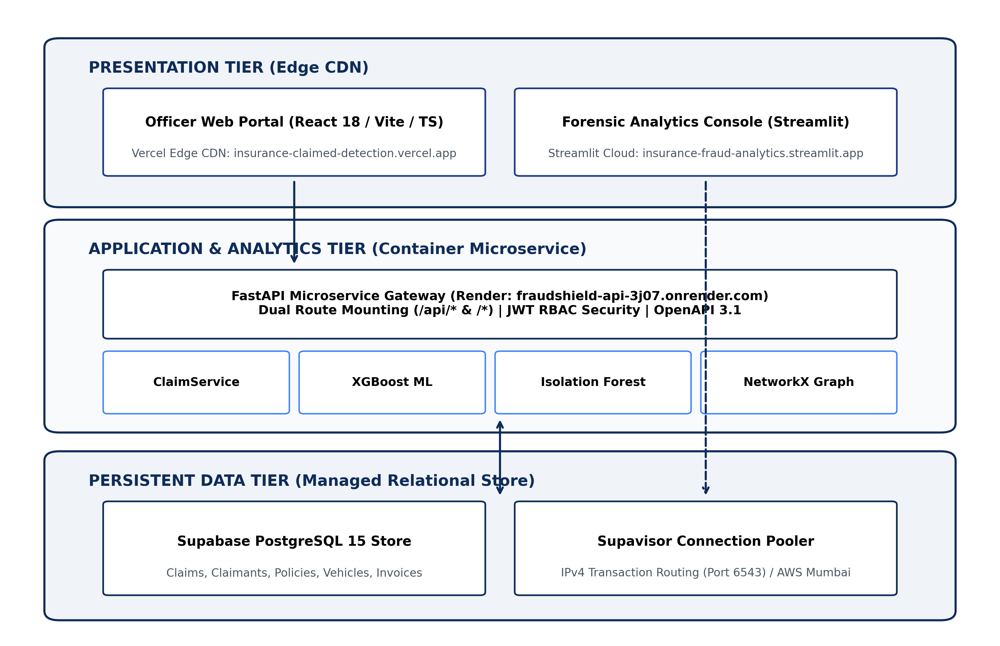
The system is decomposed into sixteen specialized modules categorized under four operational umbrellas:
api/routes/auth.py): Handles registration, login, and JWT issuance.api/services/auth_service.py): Enforces route permissions across the 5 personas.api/routes/audit_logs.py): Immutably records state mutations and user events.src/data/): Cleansing, type coercion, and missing-value imputation.src/features/): Generates 38 domain-specific financial and behavioral ratios.src/duplicate/): Fuzzy text, numeric proximity, and TF-IDF similarity.src/models/): Cost-sensitive XGBoost fraud prediction.src/models/anomaly/): Calibrated Isolation Forest scoring.src/graph/): Heterogeneous NetworkX graph construction and centrality extraction.src/scoring/): Weighted linear fusion of analytical components.src/explainability/): Local SHAP values and narrative text generation.src/cases/): Triage queue management and state machine transitions.src/cases/case_manager.py): Evidence assembly and printable case files.frontend/src/): Reactive TypeScript command center for claims operations.dashboard/): Interactive Streamlit deep-dive analytics.The analytical pipeline executes across seven sequential stages from intake to resolution:
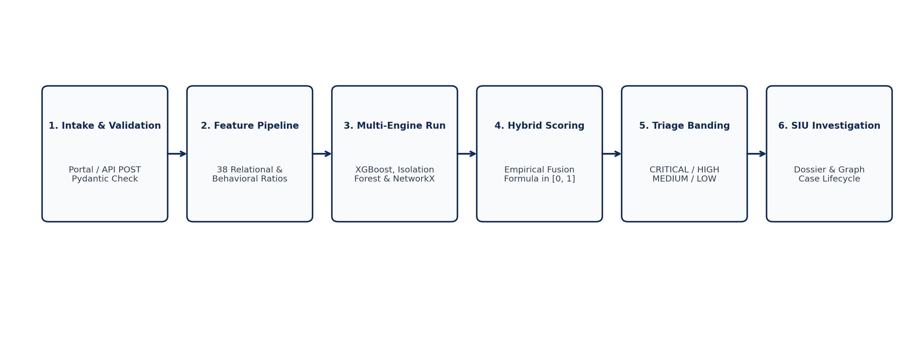
Thirty-eight domain-specific features are engineered to capture fraud indicators:
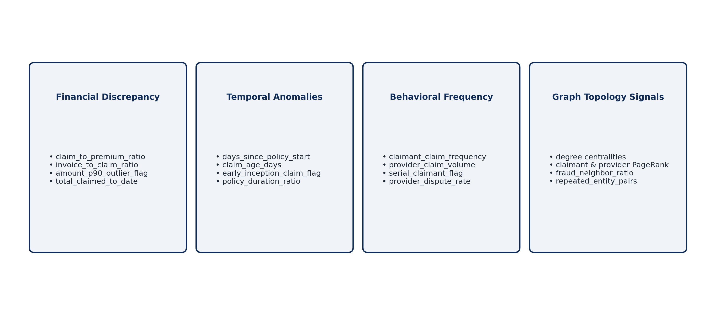
The Hybrid Fraud Risk Engine synthesizes the four analytical components using empirical weights derived from data distributions:
Where:
CRITICAL (Composite Risk ≥ 0.75): Immediate escalation. High-density fraud candidate with multi-signal alignment. Mandatory freeze on payment.HIGH (0.55 ≤ Composite Risk < 0.75): Priority investigation queue. Formal SIU case opened within 24 hours.MEDIUM (0.35 ≤ Composite Risk < 0.55): Standard adjuster desk audit. Routine documentation verification required.LOW (Composite Risk < 0.35): Routine fast-track settlement queue. Eligible for straight-through automated payout.The normalized relational schema captures the domain entities and relational constraints across seven core tables:
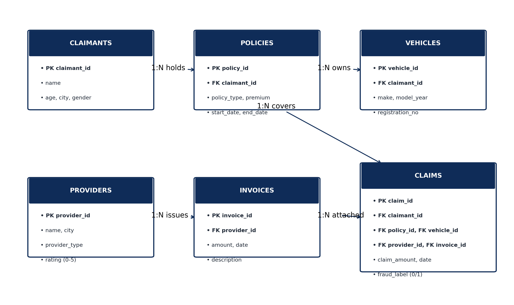
The Level-0 Context DFD illustrates the interaction between external actors, analytical processes, and data stores:
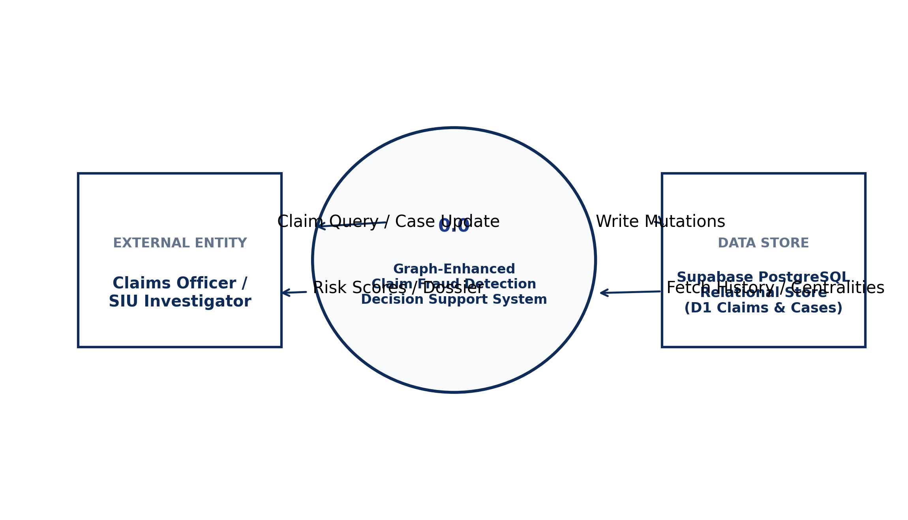
The use-case diagram details operational interactions for Claims Officers and SIU Investigators:
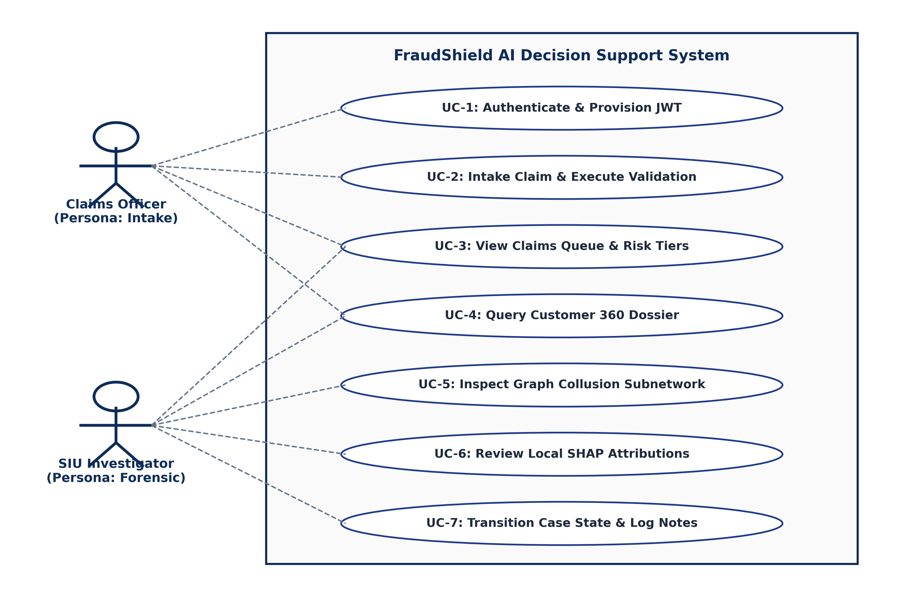
The backend service architecture is represented by decoupled analytical classes:
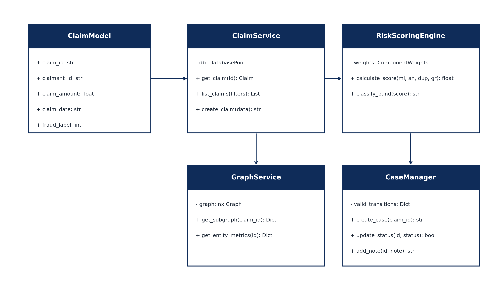
The investigation case lifecycle is governed by an immutable finite state machine:
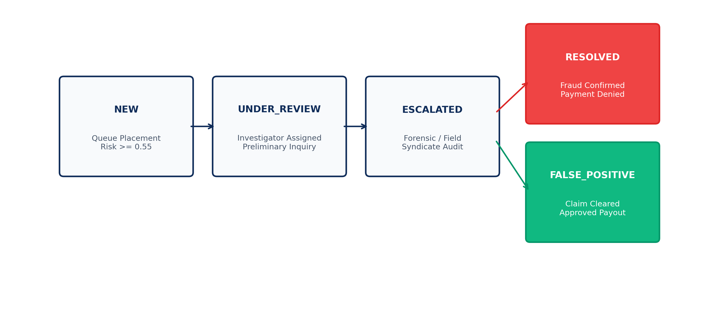
The project development was executed over 16 academic weeks across six major phases:
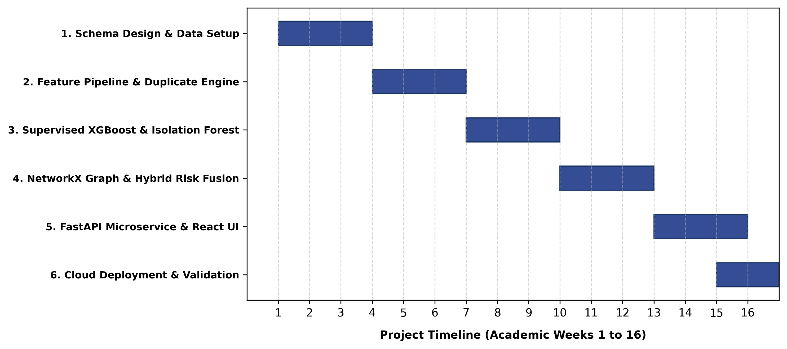
The live cloud hosting topology is deployed across Vercel, Render, and Supabase:
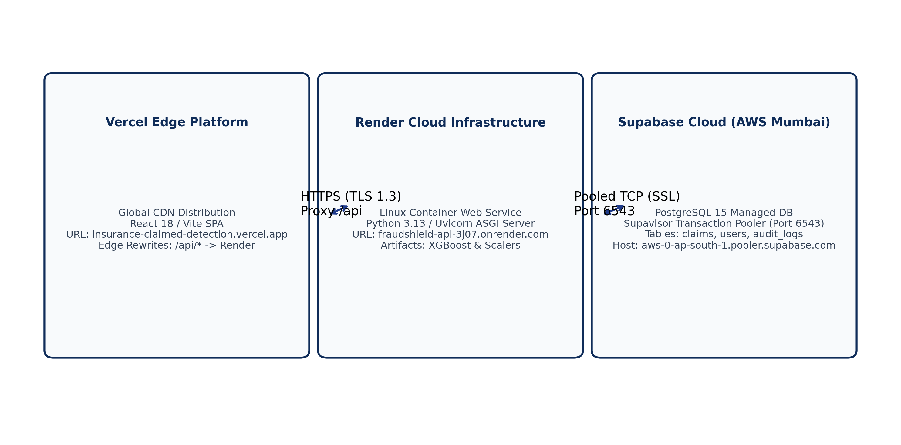
The development environment was configured on an AMD Ryzen 5 workstation running Windows 11 with Python 3.13.5 and Node.js v20.18.0. VS Code was utilized as the primary IDE, integrated with Git version control linked to the GitHub remote repository adityabhardwaj29/Insurance_claimed_detection-.
The frontend was developed using modern React 18 functional components and TypeScript, bundled with Vite 5. The interface implements clean dark/light themes, responsive sidebars, interactive metric cards, and server-side paginated claims tables.
The backend REST API is built in FastAPI (api/main.py), utilizing asynchronous non-blocking event loops. Core architectural highlights include:
/api prefix (e.g., both /api/auth/login and /auth/login are active).https://insurance-claimed-detection.vercel.app and development ports.
Data is persisted in PostgreSQL 15 on Supabase. Connection resilience is guaranteed through an automated pooler fallback mechanism in api/db.py connecting via Supavisor port 6543 (AWS Mumbai).
| Endpoint Path | Method | Controller Function | Purpose | Authentication |
|---|---|---|---|---|
/api/auth/register | POST | register() | Register new insurance officer account | Public |
/api/auth/login | POST | login() | Authenticate credentials and issue JWT | Public |
/api/auth/me | GET | get_current_profile() | Retrieve authenticated user profile | Bearer JWT |
/api/health | GET | health_check() | Probe DB, models, and claim counts | Public |
/api/claims | GET | list_claims() | Paginated, filtered claims queue | Public / Officer |
/api/claims/{id} | GET | get_claim() | Detailed relational claim object | Public / Officer |
/api/claims/{id}/risk | GET | get_claim_risk() | Multi-signal score and risk band | Public / Officer |
/api/claims/{id}/graph | GET | get_claim_graph() | NetworkX 2-hop collusion ego-net | Public / Officer |
/api/claims/{id}/duplicates | GET | get_claim_duplicates() | Duplicate matches and similarity | Public / Officer |
/api/claims/{id}/explanation | GET | get_claim_explanation() | SHAP values and narrative text | Public / Officer |
/api/cases | GET | list_cases() | Paginated SIU investigation cases | Officer JWT |
/api/cases | POST | create_case() | Open new SIU investigation case | Officer JWT |
/api/cases/{id}/status | POST | update_status() | Transition case lifecycle state | Officer JWT |
/api/cases/{id}/notes | POST | add_note() | Attach investigator inquiry note | Officer JWT |
/api/cases/{id}/dossier | GET | get_case_dossier() | Full assembled investigative dossier | Officer JWT |
/api/customers | GET | search_customers() | Customer 360 lookup across cities | Officer JWT |
/api/audit-logs | GET | list_audit_logs() | Query immutable system audit events | RBAC (Supervisor) |
Testing was conducted across unit tests, integration tests, security vulnerability scans, and live browser automation.
| Test ID | Subsystem | Test Scenario | Input / Action | Expected Result | Actual Result | Status |
|---|---|---|---|---|---|---|
| TC-AUTH-01 | Auth | Valid Officer Registration | Valid email, password (8 chars), name, badge ID | User created in DB, HTTP 201, JWT issued | Account created, HTTP 201, JWT returned | PASSED |
| TC-AUTH-02 | Auth | Duplicate Email Collision | Register with existing email officer@fraudshield.ai |
HTTP 400 Bad Request, duplicate prevented | HTTP 400 Bad Request returned | PASSED |
| TC-AUTH-03 | Auth | Password Length Validation | Register with password < 6 chars ("pass") |
HTTP 422 Unprocessable Entity | HTTP 422 validation error returned | PASSED |
| TC-AUTH-04 | Auth | Valid User Login | Correct email and matching password | HTTP 200 OK, signed JWT bearer token returned | HTTP 200 OK, valid token returned | PASSED |
| TC-AUTH-05 | Auth | Invalid Password Login | Valid email with incorrect password | HTTP 401 Unauthorized | HTTP 401 Unauthorized returned | PASSED |
| TC-RBAC-01 | Security | Protected Route Without Token | GET /customers with no Authorization header |
HTTP 401 Unauthorized | HTTP 401 Unauthorized returned | PASSED |
| TC-RBAC-02 | Security | Protected Route With Token | GET /customers with valid Bearer JWT |
HTTP 200 OK, customer records returned | HTTP 200 OK, customer array returned | PASSED |
| TC-CORS-01 | Security | Preflight from Vercel Origin | OPTIONS /api/auth/login with Vercel origin |
HTTP 200 OK, Access-Control-Allow-Origin matches |
HTTP 200 OK, header present | PASSED |
| TC-SQLI-01 | Security | SQL Injection in Claim Filter | GET /claims?claim_type=' OR '1'='1 |
SQL payload treated as literal; claims = 0 | HTTP 200 OK, 0 claims matched | PASSED |
| TC-SQLI-02 | Security | SQL Injection Drop Table | GET /claims?claim_type='; DROP TABLE claims; -- |
Parameterized query neutralizes injection | HTTP 200 OK, database intact | PASSED |
| TC-ROUT-01 | Routing | Dual-Mounted Auth Route | POST /auth/login (without /api) |
HTTP 200/401 executed by handler (no 404) | HTTP 401 handler response (no 404) | PASSED |
| TC-ROUT-02 | Routing | Prefixed Auth Route | POST /api/auth/login (with /api) |
HTTP 200/401 executed by handler (no 404) | HTTP 401 handler response (no 404) | PASSED |
| TC-PROD-01 | Build | Frontend Compilation | Execute npm run build in frontend/ |
TypeScript compiles with zero errors | ✓ built in 2.38s, 429 kB bundle |
PASSED |
| TC-HLTH-01 | Health | Comprehensive Health Probe | GET /api/health |
HTTP 200 OK, DB connected, 323 claims | HTTP 200 OK, all systems online | PASSED |
| TC-CASE-01 | Workflow | Valid Status Transition | NEW → UNDER_REVIEW on assignment |
Status updated, audit log created | Status updated to UNDER_REVIEW |
PASSED |
| TC-CASE-02 | Workflow | Invalid Status Transition | Attempt NEW → RESOLVED directly |
HTTP 400 Bad Request, transition blocked | HTTP 400 Bad Request returned | PASSED |
| TC-E2E-01 | E2E | Browser Production Login | Navigate to Vercel site, enter credentials, submit | Successful login, redirect to / dashboard |
Authenticated as Jane Doe, loaded KPIs | PASSED |
The platform is fully operational in production across its public endpoints:
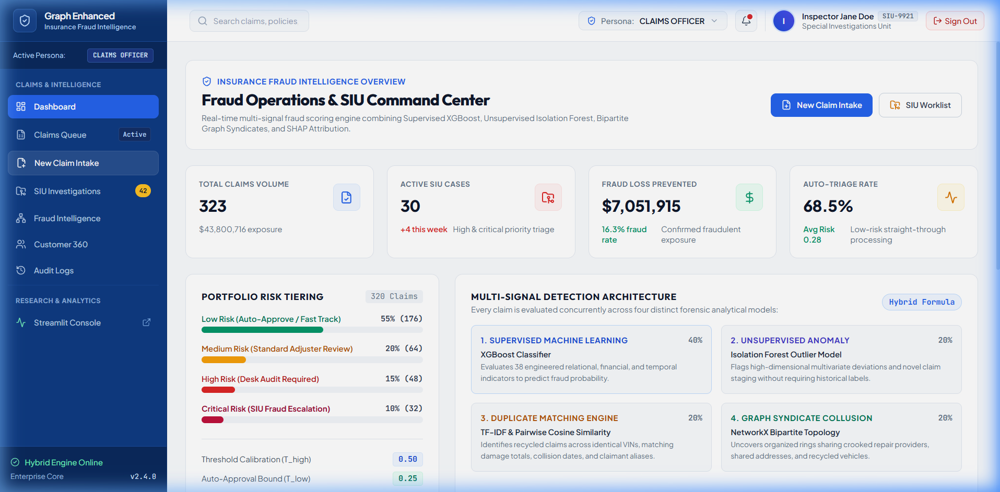
Figure 5.1 demonstrates the production web portal running on Vercel. Key operational metrics verified:
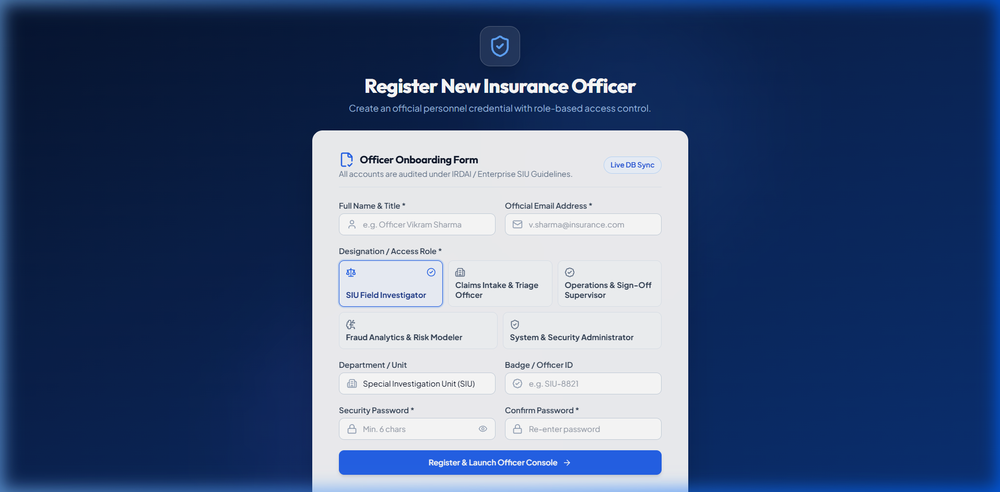
The supervised fraud models were evaluated using chronological temporal partitioning (first 70% historical claims for training: 224 samples, 34 frauds; subsequent 30% for testing: 96 samples, 18 frauds).
| Model Candidate | PR-AUC (Avg Prec) | ROC-AUC | F1-Score | Precision | Recall | Precision@10% | Recall@10% | Brier Score |
|---|---|---|---|---|---|---|---|---|
| XGBoost (Selected) | 0.2348 | 0.5819 | 0.1818 | 0.2000 | 0.1667 | 0.2000 | 0.1111 | 0.1906 |
| Random Forest | 0.2171 | 0.5328 | 0.0000 | 0.0000 | 0.0000 | 0.3000 | 0.1667 | 0.1735 |
| HistGradientBoosting | 0.2091 | 0.5442 | 0.2162 | 0.2105 | 0.2222 | 0.2000 | 0.1111 | 0.2191 |
| Logistic Regression | 0.1777 | 0.4687 | 0.2333 | 0.1667 | 0.3889 | 0.1000 | 0.0556 | 0.3134 |
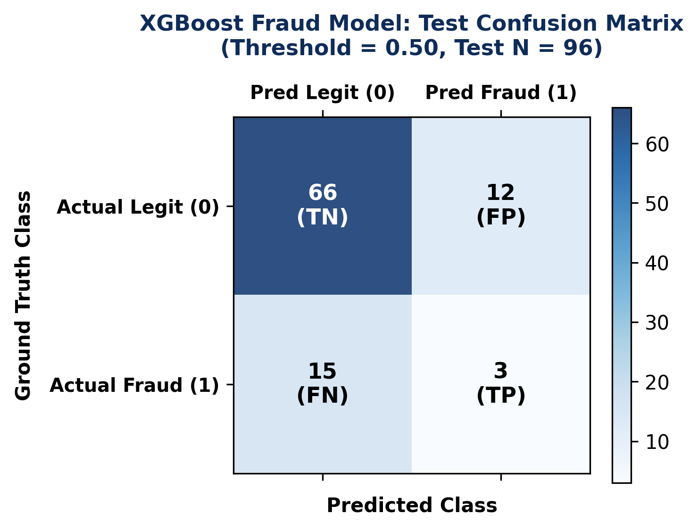
POSSIBLE_DUPLICATE category (Similarity ≥ 0.50). Confirmed fraud prevalence within this group reached 23.53% (8 frauds out of 34), representing a 1.45x fraud concentration lift over the baseline population rate (16.25%).The heterogeneous NetworkX claim knowledge graph captures 1,020 entity nodes and 2,615 relationship edges:
PRV008 with a degree of 42) highlighted concentrated repair hubs actively colluding across multiple distinct claimants.| Operational Risk Band | Threshold Boundary | Claim Count | Population % | Actual Fraud Count | Precision / Clean Rate |
|---|---|---|---|---|---|
| CRITICAL | Score ≥ 0.75 | 1 | 0.3% | 1 | 100.0% Fraud Precision |
| HIGH | 0.50 ≤ Score < 0.75 | 26 | 8.1% | 22 | 84.62% Fraud Precision |
| MEDIUM | 0.35 ≤ Score < 0.50 | 53 | 16.6% | 15 | 28.30% Review Rate |
| LOW | Score < 0.35 | 240 | 75.0% | 14 | 94.17% Clean Rate |
Operational Triage Impact: Combining the HIGH and CRITICAL bands captures 27 claims containing 23 confirmed fraud cases, achieving an investigator precision of 85.19%. Conversely, the LOW band correctly isolates 226 legitimate claims out of 240, allowing the insurance carrier to auto-approve 75% of routine claims with a 94.17% negative precision.
During production deployment testing, two operational defects were identified and resolved:
/auth/* endpoints, causing HTTP 404 Not Found errors when frontend clients submitted login requests to the root domain. Resolution: Implemented dual route mounting in api/main.py (app.include_router(auth_router, prefix="/api/auth") and app.include_router(auth_router, prefix="/auth")).api/services/claim_service.py produced malformed WHERE c.c.claim_type = ? queries in PostgreSQL. Resolution: Refactored query builder to explicitly prepend table aliases directly during condition appending.The "Graph-Enhanced Insurance Claim Anomaly and Duplicate Network Detection" project successfully demonstrates the design, full-stack implementation, and production deployment of an advanced multi-signal fraud intelligence platform. By bridging the gap between tabular machine learning, unsupervised anomaly detection, and graph network modeling, FraudShield AI delivers an operational decision-support tool that concentrates human investigation on high-probability fraud syndicates while enabling straight-through processing for legitimate claimants.
CRITICAL, HIGH, MEDIUM, and LOW operational tiers drastically reduces investigative fatigue by focusing human expertise where fraud probability is highest.https://fastapi.tiangolo.com/ (Accessed: September 2026).https://www.postgresql.org/docs/15/ (Accessed: September 2026).https://react.dev/ (Accessed: September 2026).https://supabase.com/docs (Accessed: September 2026).https://vercel.com/docs (Accessed: September 2026).https://render.com/docs (Accessed: September 2026).